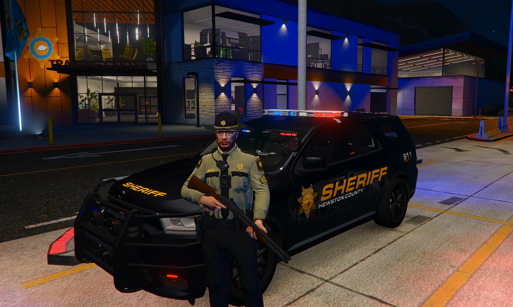

Sheriff Manfred Mainke
"Serving with Honor, Protecting with Pride"
NOTFALL
911

County Sheriff • Chief Law Enforcement Officer
Sheriff Manfred Mainke steht seit über 20 Jahren im Dienst der Öffentlichkeit. Mit unerschütterlicher Hingabe und einem tiefen Engagement für Gerechtigkeit führt er das Sheriff's Department mit Integrität und Professionalität.
Unter seiner Führung hat sich das Department zu einer der angesehensten Strafverfolgungsbehörden entwickelt, bekannt für ihre Bürgernähe und ihr Engagement für die Sicherheit der Gemeinde.
Unser Team arbeitet nach klaren Einsatzstandards: professionell, bürgernah und jederzeit verlässlich.
24/7 Streifendienst zur Gewährleistung der öffentlichen Sicherheit und schnellen Reaktion auf Notfälle.
Erfahrene Ermittler arbeiten an der Aufklärung von Straftaten und der Durchsetzung des Gesetzes.
Programme zur Stärkung der Beziehung zwischen Polizei und Bürgern in unserer Gemeinde.
Unterstützung des Justizsystems durch professionelle Gerichtsdienste und Vollstreckung.
Von Prävention bis Einsatzkoordination bieten wir vollständige Unterstützung für Sicherheit und Ordnung.
Sofortige Reaktion auf Notrufe und Notfallsituationen
Programme und Beratung zur Verhinderung von Straftaten
Durchsetzung von Verkehrsregeln für sichere Straßen
Professionelle Untersuchung von Straftaten
Bildungs- und Präventionsprogramme für alle Altersgruppen
Unterstützung und Ressourcen für Opfer von Straftaten
Senden Sie Ihr Anliegen direkt an das Department. Notfälle bitte weiterhin ausschließlich über 911 melden.
911
Für dringende Notfälle
(555) 123-4567
Allgemeine Anfragen
Sheriff's Department
123 Main Street
County Building
Montag - Freitag
8:00 - 17:00 Uhr
Notdienst: 24/7